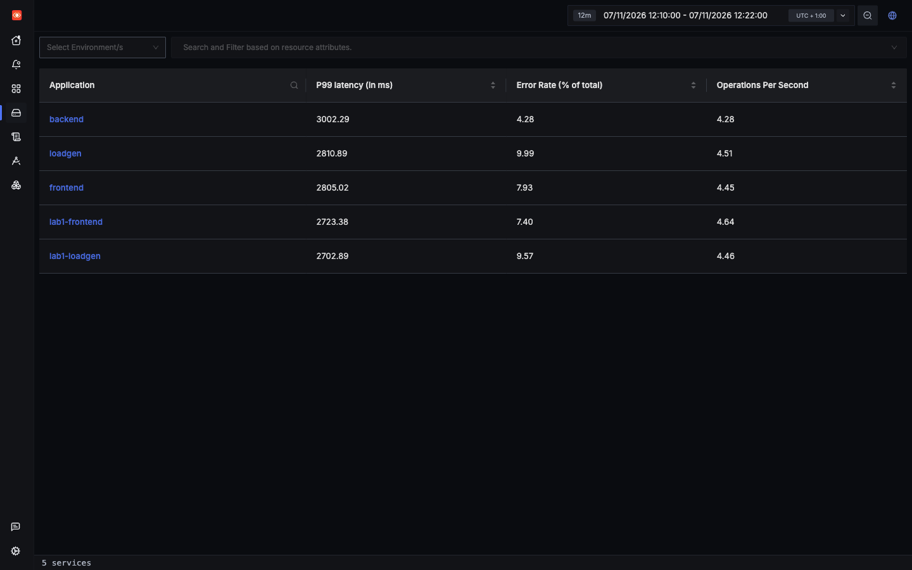
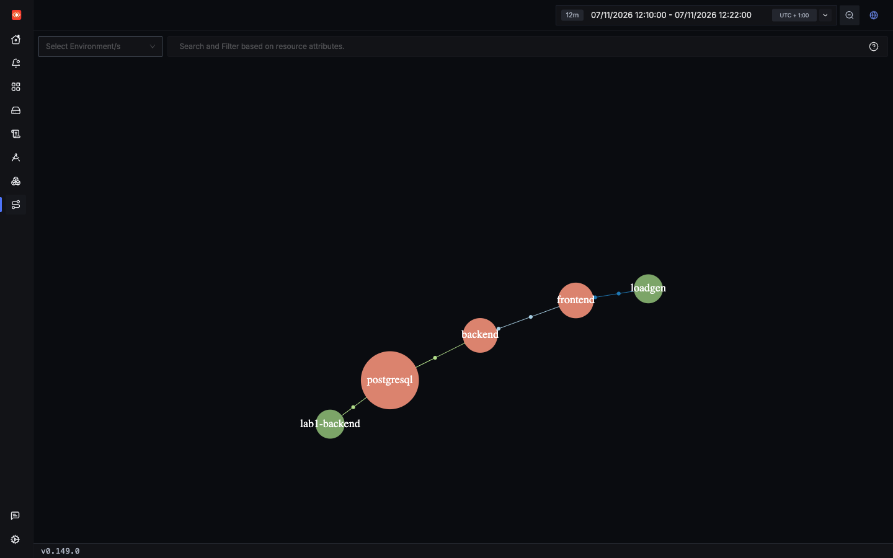
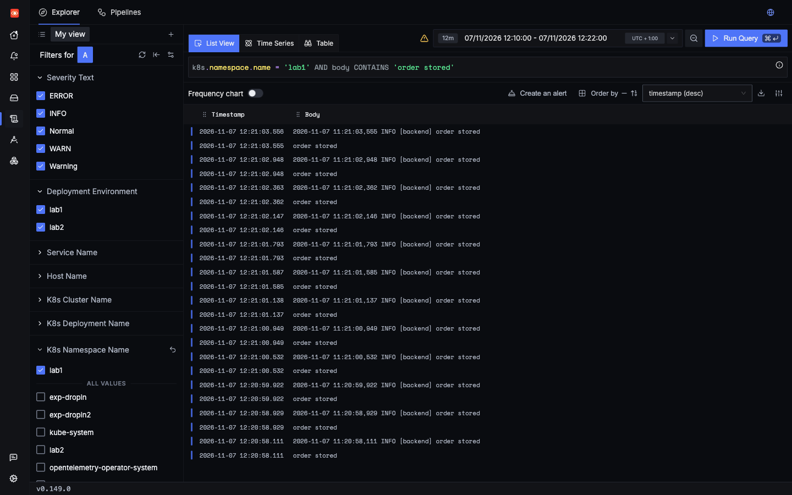

Reference
What is missing, and how to fix it
Plain OpenTelemetry plus a simple SigNoz install gives you a lot, as the incidents showed. It also leaves real gaps, and one of them can mislead you. Fixes marked Untested are proposals only, and have not been tried here.
To try a change from this page, follow When you change code. Collector settings live in signoz/, so you deploy those with make up.
The history behind each gap is in docs/FINDINGS.md. Saved results on this page come from the current labs, and say which lab they are for.
Gap 1: a new install rejects telemetry until someone signs up
The collector pod shows Ready, but ports 4317 and 4318 stay closed until an organization exists. Apps get Connection refused, and their telemetry is lost. kubectl get pods will not warn you.
Do this: complete signup right after install, and include it in any automated setup.
Gap 2: the Service Map undercounts calls
Status: improved, not fixed. With default settings, backend could vanish from Services, and the Service Map showed about 1% of its real calls. One setting made that much better, but it still depends on where your pods land. In this tutorial's load run, Lab 1's services were missing from both pages. Don't use either as proof of what is running, or as a measure of traffic.

lab1-backend is not listed, although it served over 3,000 requests in this range.
lab1-backend connects only to postgresql, and lab1-frontend is missing.Why it happens
Both pages depend on ClickHouse materialized views that join a parent span to its child. Those views only match a parent and child that arrive in the same insert. By default each service flushes spans on its own 5-second timer, so they usually land in different inserts, and the view writes nothing. docs/FINDINGS.md has the reproduction.
The fix that is applied
Both labs flush spans every 500 ms, so parents and children usually land in the same collector batch and share an insert. This table was measured with the chart's default 1-second batch. The lab now uses 5 seconds, which reduces load on ClickHouse:
labs/lab1-hands-off/k8s/instrumentation.yaml lines 40–4140 # Service Map fix. See gap 2 in docs/FINDINGS.md.
41 - { name: OTEL_BSP_SCHEDULE_DELAY, value: "500" }That helps, but it doesn't make these pages exact. This lab runs two collectors, and a parent and child on different collectors can never share an insert. These are the counts from this tutorial's load run, measured against real calls:
Lab 2's links show about a third of their real calls. Lab 1's links show none, which is why lab1-frontend is missing from the map above and lab1-backend is missing from Services. In this deployment lab1-frontend and lab1-backend ran on different nodes, so every call crossed nodes, while Lab 2's two replicas per node also make same-node calls. That fits the explanation above, but it was not tested directly. docs/FINDINGS.md has earlier runs, from 85% on one node down to 41% with spans split across two collectors.
Working around it
- Use the Traces Explorer, which reads spans directly.
- Use the span-derived metric below for real call rates per service.
Other fixes
A loadbalancing exporter in the agents, keyed on trace ID, would send a whole trace to one collector. That is the likely fix for two collectors. Untested
A groupbytrace processor in a collector ahead of SigNoz would send a trace's spans together. Untested
You could also report it to SigNoz, with the reproduction in docs/FINDINGS.md.
Gap 3: app telemetry has no Kubernetes context
Status: fixed in this lab. Both labs send through the agent on their node, which has k8sattributes on all three pipelines. Before that fix, apps sent straight to SigNoz's collector, skipping the agent, so you could not go from a slow trace to the pod that served it.
All 62,872 spans from the four app services in the load run had a pod name. The setting that matters is the endpoint. In Lab 1 it is one line of the Instrumentation resource:
labs/lab1-hands-off/k8s/instrumentation.yaml lines 19–2119 exporter:
20 # The SigNoz agent on the same node.
21 endpoint: http://k8s-infra-otel-agent.signoz.svc.cluster.local:4318Each agent only knows its own node's pods, and the agent's Service keeps traffic on the node, so a node with no agent loses its apps' telemetry. docs/FINDINGS.md has the details.
Gap 4: k8s-infra duplicates every app log
The app sends logs over OTLP, and k8s-infra also reads the same lines from stdout. Each copy has a different half of the information:
| OTLP copy | stdout copy | |
|---|---|---|
service.name | Yes | Blank |
| Kubernetes attributes | Yes, since the gap 3 fix | Yes |
| Severity | Yes | Blank |
| Link to trace | Yes | No |

This is why log searches can return mixed results that filter differently: a search on severity_text finds only OTLP copies, while a search on a Kubernetes attribute finds both.
The stdout count is higher than a simple duplicate would give, so this sorts those lines by type:
The app log lines match the OTLP count exactly, at 8,824 each, so every app log really is stored twice. None of the 30,825 stdout lines has a trace ID, even as text, because the app's log format doesn't include one.
- Stack traces split up. On the stdout path, each line of a traceback becomes its own log record, so one exception turns into dozens of unrelated rows. OTLP keeps a traceback together on a single record.
- Some lines never go through OTLP at all: uvicorn's access log and the health probe lines. OpenTelemetry excludes those probes from spans, but uvicorn still prints them.
Fixed in Lab 3, left in Labs 1 and 2 on purpose. Lab 3's app stops sending logs over OTLP, prints its trace IDs in each line, and a SigNoz log pipeline turns them back into fields. Each line is then stored once, linked to its trace, at the cost of extra= fields. Labs 1 and 2 keep both copies, because their pages use those fields. Logs: one copy, from stdout has the settings, the measurements, and the steps to try it on Lab 1.
Other fixes Untested: keep OTLP logs and stop the node agents reading the app containers' output, which loses uvicorn's own lines. Or print JSON to stdout and parse it with a pipeline, which keeps the fields.
Gap 5: nothing is set up for you
A fresh install has 0 dashboards, 0 alert rules, 0 notification channels, 0 log pipelines and 0 saved views API. You should plan to:
- Import dashboards. SigNoz/dashboards has folders such as
apm/,k8s-infra-metrics/andpostgresql/. Lab 3 imports four Kubernetes ones. The Postgres one opens empty, as Lab 5 explains. The others are Untested here. - Write alerts. That repo has no alert definitions, so you write your own. Lab 4 has eight, each proved against a real failure.
- Add a notification channel, or alerts will have nowhere to go.
Gap 6: a collector can silently stop writing logs
During an overload in Lab 6, one of the two signoz-otel-collector pods stopped writing logs to ClickHouse, and never recovered. For 84 minutes it stayed 1/1 Running with 0 restarts, while the other pod and ClickHouse were fine. It dropped 19,131 log records and 3,445 spans. Because agents hold long-lived connections, whatever was pinned to that pod lost its logs, including Kubernetes events, so a real alert never fired.
This matches an open issue, signoz-otel-collector#965, "clickhouselogsexporter: pushToClickhouse deadlocks when the consumer exits early", which others confirm on v0.144.15, the version here. Running two replicas doesn't protect you. A healthy pod status proves nothing, so check the logs:
kubectl -n signoz logs -l app.kubernetes.io/component=otel-collector --since=10m --tail=-1 | grep -c 'Dropping data'If that isn't 0, restart them. Logs came back within 14 seconds when we did:
kubectl -n signoz delete pod -l app.kubernetes.io/component=otel-collectorIt can stop all logs, not just some. It happened again on 2026-11-08, when two load generators and an image build, running together, overloaded the VM at about 21:40 UTC. ClickHouse restarted twice, and was healthy again by 21:51. This time both collectors got stuck, repeating couldn't PrepareBatch for inserting resource fingerprints: context deadline exceeded. No log was written after 21:39:57, and nothing recovered by itself: 45 minutes later both pods were still 1/1 Running with 0 restarts, and spans were still arriving, so traces looked fine. The Logs page just showed nothing new. So if logs stop and traces don't, check this first. The smoke test in make lab1 and make lab2 now suggests it. API
It's why this tutorial asks you to run one load generator at a time. It happened a third time while we built Lab 5, when loading a large table and restarting the collectors at once stopped logs for 12 minutes.
Gap 7: smaller issues
Span noise
59.1% of Lab 1's spans in the load run are zero-length ASGI http send and http receive spans. They crowd traces and inflate error counts.
The FastAPI instrumentation has an exclude_spans argument, but it is a code argument. The installed agent has no environment variable for it, confirmed by reading its source in a running pod. So a hands-off setup can't turn this on through config. You would need a line of code, or a filter in a collector. Untested
Until then, filter them out in searches:
Other things to know
- Vague span names. Client spans are named just
GETorPOST, and every scenario shares one operation. In Lab 1,http.targettells them apart. - 4xx is not an error.
bad_inputhas span status Unset, so it does not affect the error rate. See the error incident. - Exporter logs can ship as app logs.
docs/FINDINGS.mdrecords the exporter's own failures reaching SigNoz asWARNandERRORlogs, through the root logger. That was on the earlier hand-built setup, and was not rechecked here. - Older attribute names. The instrumentation emits
http.server.duration,db.statementandnet.peer.name. For example,http.server.durationhashttp.target, nothttp.route. Check this when importing dashboards. - Silent misconfiguration. A k8s-infra endpoint without
http://installs fine, and pods stay Running while every export fails. Check collector logs, not pod status. - Outbound call. The self-hosted UI requests release notes from
cms.signoz.cloud.
What this tutorial could not verify
- Queries marked Query API only. They ran through the same endpoint the UI calls, but were not confirmed on the page.
- Why Lab 1 is missing from the Service Map in this run. Pod placement fits the explanation in gap 2, but it was not tested by moving the pods.
- How often gap 2 hits real deployments. Unknown. This is one small lab.
- All proposed fixes. Fixes marked Untested have not been tried.
Check yourself: Why is the Service Map count lower than the real number of calls?
Check yourself: You need real call volumes for a service. Where do you look?